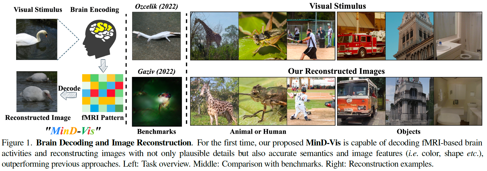

Cortical parcellation using overlapping spatial maps from tensor decomposition on resting-state fMRI with graph representation learning
Untamed atlas
- Yijun Liu 1
- Jian (Andrew) Li 2, 3
- Jessica L. Wisnowski 4, 5
- Richard M. Leahy 1
- 1Ming Hsieh Department of Electrical and Computer Engineering, University of Southern California
- 2Athinoula A. Martinos Center for Biomedical Imaging, Massachusetts General Hospital and Harvard Medical School
- 3Center for Neurotechnology and Neurorecovery, Department of Neurology, Massachusetts General Hospital and Harvard Medical School
- 4Radiology and Pediatrics, Division of Neonatology, Children’s Hospital Los Angeles
- 5Keck School of Medicine, University of Southern California


Overview
Motivation
Decoding visual stimuli from brain recordings aims to deepen our understanding of the human visual system and build a solid foundation for bridging human vision and computer vision through the Brain-Computer Interface. However, due to the scarcity of data annotations and the complexity of underlying brain information, it is challenging to decode images with faithful details and meaningful semantics.
Contribution
In this work, we present MinD-Vis: Sparse Masked Brain Modeling with Double-Conditioned Diffusion Model for Vision Decoding. Specifically, by boosting the information capacity of representations learned in a large-scale resting-state fMRI dataset, we show that our MinD-Vis framework reconstructed highly plausible images with semantically matching details from brain recordings with very few training pairs. We benchmarked our model and our method outperformed state-of-the-arts in both semantic mapping (100-way semantic classification) and generation quality (FID) by 66% and 41%, respectively. Exhaustive ablation studies are conducted to analyze our framework.
Highlights
- A human visual decoding system that only reply on limited annotations.
- State-of-the-art 100-way top-1 classification accuracy on GOD dataset: 23.9%, outperforming the previous best by 66%.
- State-of-the-art generation quality (FID) on GOD dataset: 1.67, outperforming the previous best by 41%.
- For the first time, we show that non-invasive brain recordings can be used to decode images with similar performance as invasive measures.
MinD-Vis

Stage A (left): Self-supervised pre-training on large-scale fMRI dataset using Sparse-Coding based Masked Brain Modeling (SC-MBM); Stage B (right): Double-Conditioned Latent Diffusion Model (DC-LDM) for image generation conditioned on brain recordings.
Results compared with benchmarks

Generation Consistency Replication Dataset